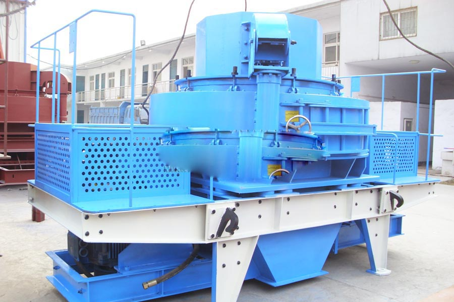

Construction waste crushing production line

Mobile construction waste crushing station for urban construction waste crushing.
silica sand making plant
silica sand making plant. Quartz sand crusher, quartz sand crusher, quartz sand crusher, sand making machine, CS series cone crusher is suitable for crushing medium hardness of superhard materials broken over, such as granite, basalt, quartzite, iron ore , pebble crushing operations.
Quartz sand crusher have? What is currently more advanced quartz sand crusher is? Kind of quartz sand crusher has more jaw crusher, impact crusher, cone crusher, impact crusher. Currently using should be relatively broad impact crusher is sand.
Silica is a specialist semiconductor distribution business offering an extensive technology and product portfolio from a highly focused linecard. Serving most Western and Eastern European countries, Silica markets through pan-European agreements from the leading suppliers of semiconductors.

Introduction to Silica Sand Mining
Silica offers one of the most comprehensive product portfolios available from any distributor. With local teams of application engineers and technology specialists, it is dedicated to supporting its OEM customers technically and to providing the design-in expertise needed for customers to compete successfully.
Quartz sand production line, CAG produce a full set of quartz sand production line equipment, to provide you with comprehensive technical support, sand production line consists of vibrating feeder, jaw crusher (according to the material size, optional), Crusher (Article three generations of Sand), vibrating sieve.
A full suite of value added supply chain management services, such as buffer stock management, replenishment services (Kanban), EDI and supply chain consulting, is available to Silica's European customers in order to reduce inventory, to lower costs and reduce time to market cycles.
Silica Sand Applications
Fiji silica sand crusher manufacturer. Rounded pebbles of chalcedony are used in ball mills for finer crushing of minerals like felspar, calcite, and barytes. Chalcedony being the cryptocrystalline variety of silica is very hard and has good abrasive effect on the material to be pulverized. Some of the ball mills use steel shots for this purpose. Chalcedony pebbles are used to advantage where product absolutely free from iron contamination is required. The agate pieces after cutting to requisite sizes and shapes are utilized in the manufacture of fulcra of scientific balances and making edges, planes and bearing of precision instruments. Cambay and Varanasi are important agate cutting centres. Big pebbles are used for making mortar and pestle. Glass-sand in large quantities is used as moulding sand in the foundry industry, as body constituent in the ceramic industry in the preparation of glazes and sometimes added to the raw material for cement manufacture to balance SiO2, Al2O3 and Fe2O3 percentages. Silica flour made by grinding silica sand is used in paints. Paint manufacturers generally prefer diatomite powder which has a wide covering powder.
Describes the best domestic quartz sand crusher foundry, quartz sand crusher crushing equipment is one of the commonly used sand production line, wide range of uses, cost-effective, and therefore subject to many consumers.
Fiji silica sand crusher price. Yellow quartz sand crusher, quartz sand crusher, quartz sand crusher is one of the world's most advanced crushing equipment, whether it is from the production efficiency, service life and failure rates for both unbeatable. Then the crusher in the production process is how to complete the material crushing it.
Leave Me A Message, Now
If you have any questions regarding equipment prices, production line configuration or other problems, you can send a message to us, we will contact you soon.